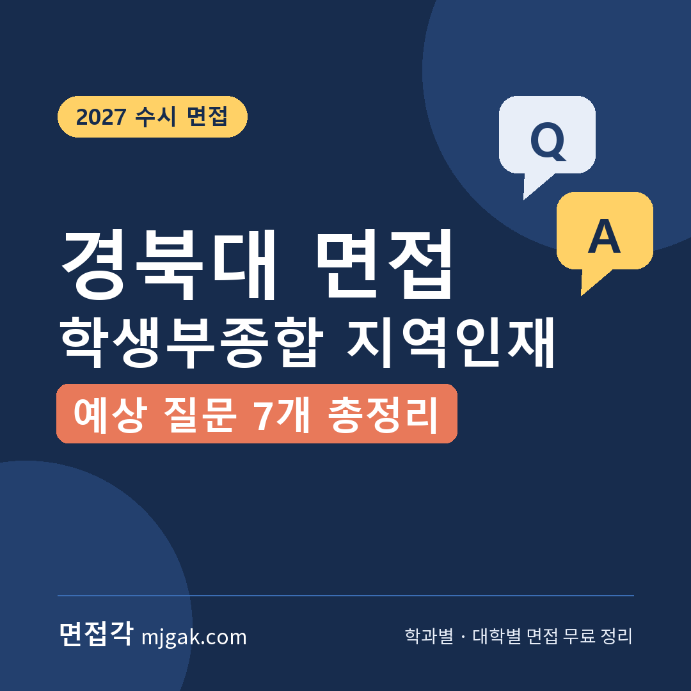
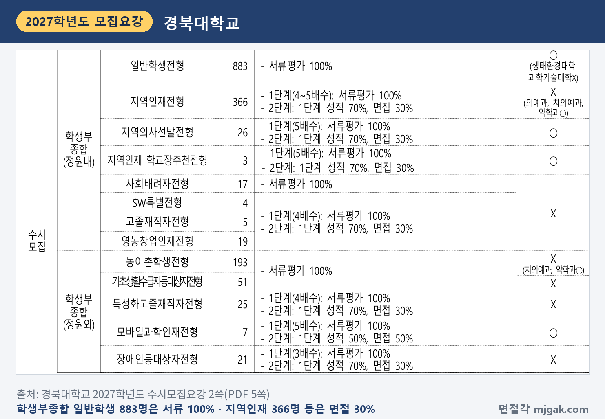
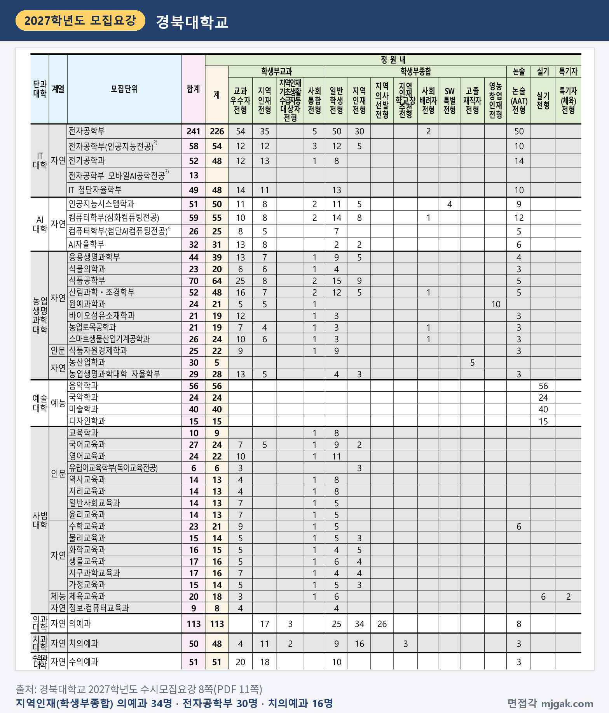
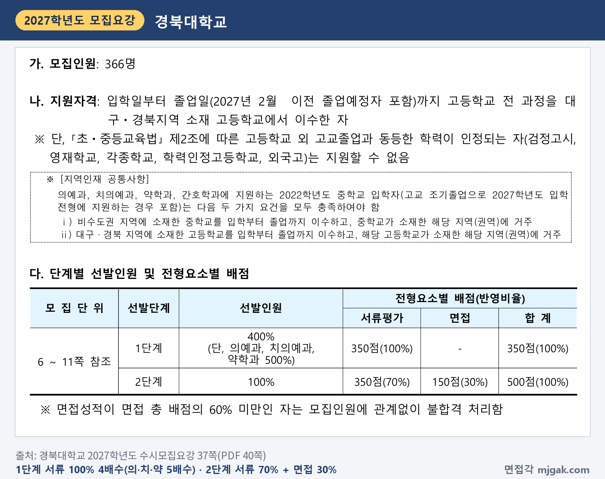
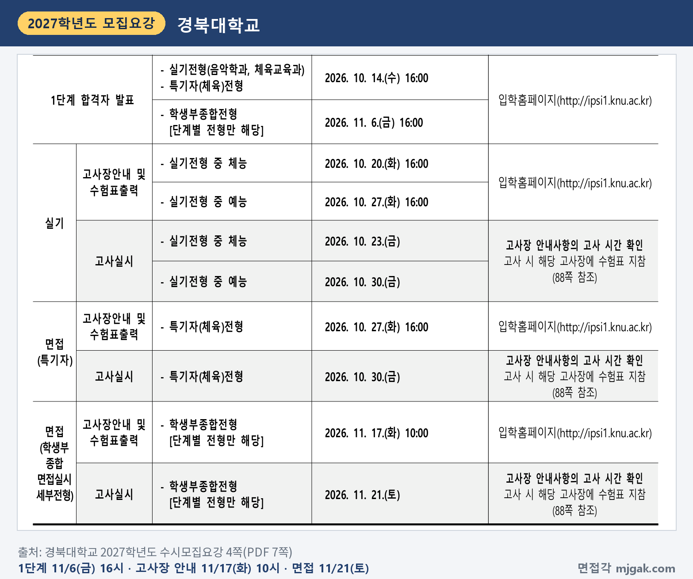
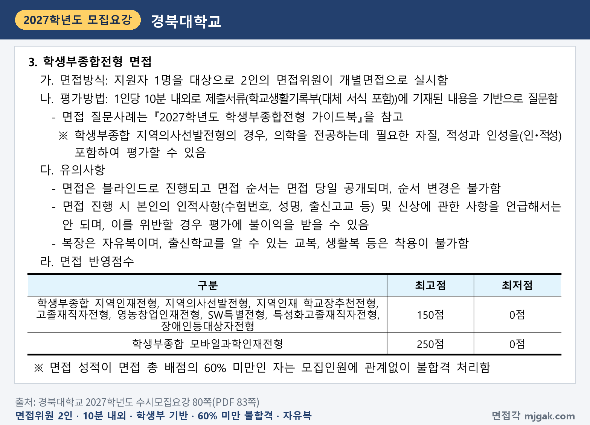
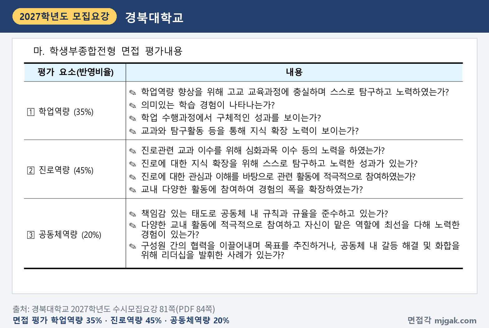
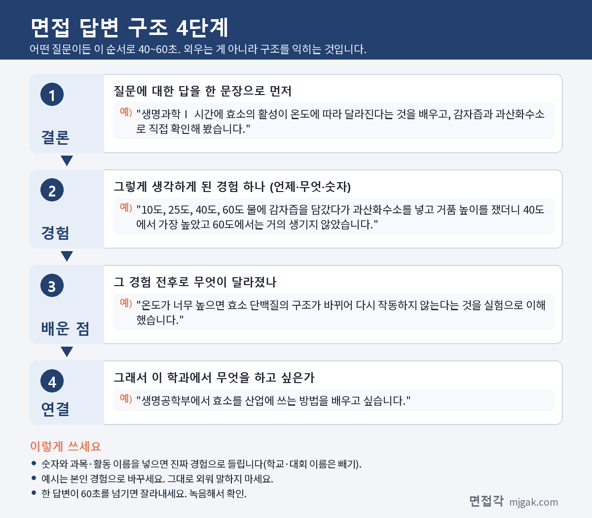
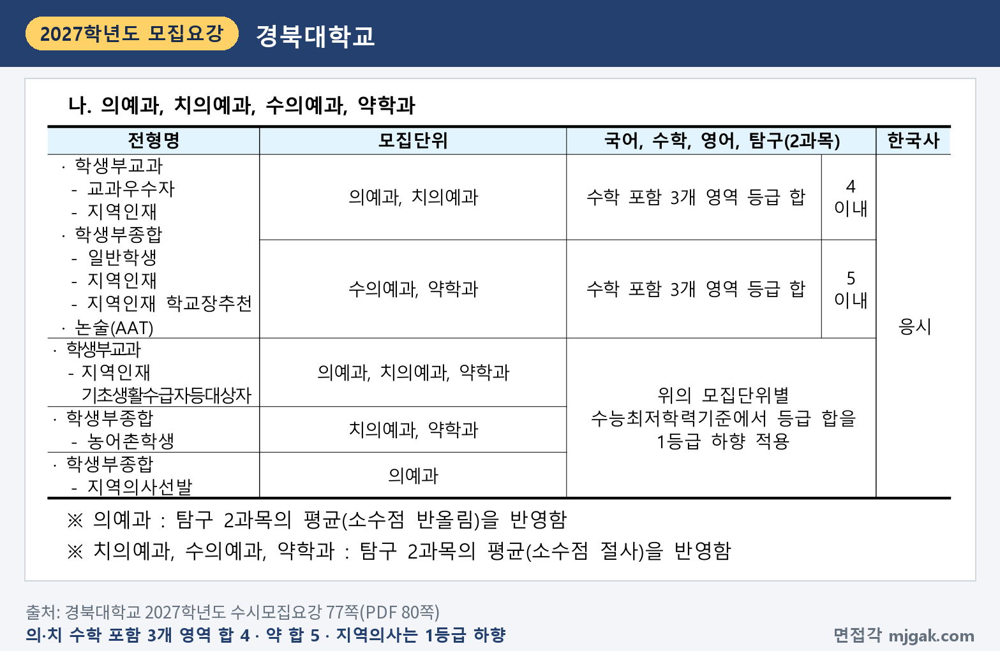

Ctrl+V (서식 유지됨)제목
본문 (이 영역 전체가 복사됩니다)
📷 여기에 이미지 넣기 — 썸네일 — thumb-kyungpook.png (대표 이미지로 지정)
경북대 학생부종합 면접에서 먼저 챙길 것은 면접일이 수능 이틀 뒤라는 점입니다. 1단계 합격자 발표는 11월 6일(금) 16시, 수능은 11월 19일(목), 면접은 11월 21일(토)입니다. 경북대 학생부종합이 모두 면접을 보지는 않습니다. 가장 인원이 많은 일반학생전형(883명)은 서류평가 100%이고, 면접은 지역인재전형(366명) 같은 단계별 전형만 봅니다. 2단계는 서류 70%와 면접 30%를 합산하고, 면접 점수가 배점의 60%에 못 미치면 불합격입니다. 경북대학교 2027학년도 수시모집요강을 바탕으로 면접 전형과 모집단위, 일정, 방식, 예상 질문 7개, 준비 순서를 정리했습니다. 지역인재전형을 중심으로 쓰고 의예과·치의예과·약학과는 따로 묶었습니다. 경북대 학생부종합 단계별 전형에 지원한 고3과 재수생이 읽으시면 됩니다.
1. 경북대 학생부종합 면접, 2027학년도에는 어떻게 보나
경북대 학생부종합(정원 내)에서 면접을 보는 전형은 지역인재전형 366명, 지역의사선발전형 26명, 지역인재 학교장추천전형 3명, SW특별전형 4명, 고졸재직자전형 5명, 영농창업인재전형 19명입니다. 정원 외로는 특성화고졸재직자전형 25명, 모바일과학인재전형 7명, 장애인등대상자전형 21명이 면접을 봅니다. 일반학생전형 883명, 사회배려자전형 17명, 농어촌학생전형 193명, 기초생활수급자등대상자전형 51명은 서류평가 100%라 면접이 없습니다(2·36·71쪽).
📷 여기에 이미지 넣기 — 캡처 1 — 경북대학교 2027학년도 수시모집요강 2쪽(PDF 5쪽): kyungpook-2027-summary.png
대표 전형인 지역인재전형은 대구·경북 소재 고등학교에서 입학부터 졸업까지 전 과정을 이수한 사람이 지원합니다. 검정고시, 영재학교, 외국고 등 출신은 지원할 수 없습니다(37쪽). 모집단위별로 보면 의예과 34명, 전자공학부 30명, 간호학과 22명, 생명공학부·약학과 각 18명, 지구시스템과학부·치의예과 각 16명, 물리학과·첨단기술융합대학 자율학부1 각 14명, 기계공학부 10명입니다(6·8·10쪽). 지역인재전형 인원이 없는 모집단위도 있으니 직접 확인하세요.
📷 여기에 이미지 넣기 — 캡처 2 — 경북대학교 2027학년도 수시모집요강 8쪽(PDF 11쪽): kyungpook-2027-units.png
전형 방법은 1단계에서 서류평가 100%로 모집인원의 4배수(의예과·치의예과·약학과 5배수)를 뽑고, 2단계에서 서류 350점(70%)과 면접 150점(30%)을 합산합니다. 면접 성적이 면접 총 배점의 60% 미만이면 모집인원과 관계없이 불합격입니다(37쪽). 이 글에서 계산하면 150점의 60%는 90점이고, 1단계 합격 규모는 전자공학부(30명) 120명, 의예과(34명) 170명입니다. 1단계 합격선의 동순위자는 모두 뽑습니다(71쪽). 지역인재전형 수능 최저는 의예과·치의예과·약학과에만 있습니다(38쪽).
📷 여기에 이미지 넣기 — 캡처 3 — 경북대학교 2027학년도 수시모집요강 37쪽(PDF 40쪽): kyungpook-2027-method.png
2단계 동점자는 면접 성적, 서류의 학업역량, 진로역량 순으로 가립니다(71쪽). 학교폭력 조치사항은 모든 전형에서 감점 또는 부적격 처리하고, 단계별 전형은 1단계에서 감점합니다(75쪽). 전형료는 50,000원이고 1단계 불합격자는 10,000원을 돌려받습니다(85쪽).
2. 언제 보나: 11월 6일(금) 1단계 발표, 수능 이틀 뒤 11월 21일(토) 면접
- 11월 6일(금) 16시: 1단계 합격자 발표(입학홈페이지)
- 11월 17일(화) 10시: 고사장 안내, 수험표 출력
- 11월 19일(목): 수능
- 11월 21일(토): 면접(학생부종합 단계별 전형 모두)
- 12월 18일(금) 16시: 합격자 발표
고사 시간은 고사장 안내사항에서 확인하고, 수험표를 지참합니다(4쪽). 합격자 발표는 입학홈페이지에 게시하고 개별 통보하지 않습니다(16쪽).
📷 여기에 이미지 넣기 — 캡처 4 — 경북대학교 2027학년도 수시모집요강 4쪽(PDF 7쪽): kyungpook-2027-schedule.png
3. 면접은 어떻게 보나
면접위원 2인이 지원자 1명을 개별면접으로 봅니다. 1인당 10분 내외로, 학교생활기록부에 기재된 내용을 기반으로 질문합니다. 면접 질문사례는 『2027학년도 학생부종합전형 가이드북』을 참고하라고 안내합니다(80쪽).
면접은 블라인드로 진행하고, 면접 순서는 당일 공개되며 바꿀 수 없습니다. 수험번호, 성명, 출신고교 등 인적사항과 신상을 말하면 평가에 불이익을 받을 수 있습니다. 복장은 "자유복"이고 출신학교를 알 수 있는 교복, 생활복 등은 입을 수 없습니다(80쪽). 수험표와 공적신분증은 고사 시간 중 항상 지녀야 합니다(21쪽).
📷 여기에 이미지 넣기 — 캡처 5 — 경북대학교 2027학년도 수시모집요강 80쪽(PDF 83쪽): kyungpook-2027-interview.png
면접 평가는 학업역량 35%, 진로역량 45%, 공동체역량 20%입니다(81쪽). 진로역량의 첫 항목이 "진로관련 교과 이수를 위해 심화과목 이수 등의 노력을 하였는가?"이니, 어떤 과목을 왜 골랐는지 답을 준비하세요.
📷 여기에 이미지 넣기 — 캡처 6 — 경북대학교 2027학년도 수시모집요강 81쪽(PDF 84쪽): kyungpook-2027-criteria.png
서류평가는 지역인재전형 등에서 학업역량 45%, 진로역량 40%, 공동체역량 15%이고, 블라인드로 평가합니다(78·79쪽).
4. 경북대가 공개한 문항은 이런 모습입니다
경북대는 「2026학년도 선행학습영향 자체평가 보고서」를 입학홈페이지에 공개하고, 그 부록에 학과별 면접 문항을 싣고 있습니다. 다만 보고서에 "허락 없이 변경하거나 복제할 수 없다"는 문구가 있어 이 글에는 문항 내용을 옮기지 않았습니다. 관심 있는 학생은 경북대 입학홈페이지에서 보고서 원문을 직접 읽어 보세요. 모집요강은 면접을 학교생활기록부 기재 내용을 바탕으로 질문하는 개별면접으로 안내합니다(80쪽).
5. 평가 기준에서 나올 예상 질문 7개와 답변법
아래 7개는 81쪽 평가 내용과 위 공개 문항의 형태를 바탕으로 정리한 예상 질문입니다. "○○"에는 내 학생부의 과목과 활동이 들어갑니다. 예시 답변은 모집단위를 바꿔 쓴 가상의 예시이니 본인 경험으로 바꾸세요.
▶ 질문 1. ○○ 수업에서 탐구한 내용을 설명해 보세요. (학업역량: 교과와 탐구활동을 통한 지식 확장)
왜 묻나: 학업역량에 "교과와 탐구활동 등을 통해 지식 확장 노력이 보이는가?"가 있습니다.
답변 구조: 수업에서 배운 개념 → 직접 확인한 방법과 숫자 → 알게 된 것 → 학과 공부와 연결.
답변 예시 (생명공학부):
"생명과학Ⅰ 시간에 효소의 활성이 온도에 따라 달라진다는 것을 배우고, 감자즙과 과산화수소로 직접 확인해 봤습니다. 10도, 25도, 40도, 60도 물에 감자즙을 담갔다가 과산화수소를 넣고 거품 높이를 쟀더니 40도에서 가장 높았고 60도에서는 거의 생기지 않았습니다. 온도가 너무 높으면 효소 단백질의 구조가 바뀌어 다시 작동하지 않는다는 것을 실험으로 이해했습니다. 생명공학부에서 효소를 산업에 쓰는 방법을 배우고 싶습니다."
주의: 탐구 이름만 말하지 말고, 그 탐구의 핵심 개념을 1분 안에 설명할 수 있게 준비하세요.
▶ 질문 2. 지원 학과와 관련해 어떤 과목을 골라 들었고, 무엇을 배웠나요? (진로역량: 심화과목 이수 노력)
왜 묻나: 진로역량(45%)의 첫 항목이 심화과목 이수 노력입니다.
답변 구조: 고른 과목과 이유 → 그 과목에서 배운 것 하나 → 다른 과목과 이어진 장면 → 학과와 연결.
답변 예시 (전자공학부):
"전자공학부에 필요하다고 생각해 3학년 때 물리학Ⅱ와 미적분을 골라 들었습니다. 물리학Ⅱ에서 축전기를 배울 때, 충전되는 전압이 시간에 따라 어떻게 늘어나는지 그래프로 그려 보았습니다. 처음에는 일정하게 늘어날 줄 알았는데, 미적분에서 배운 지수함수로 보니 처음에 빠르고 나중에 느려지는 이유를 설명할 수 있었습니다. 전자공학부에서 회로 이론을 배워 이런 변화를 직접 설계해 보고 싶습니다."
주의: 과목 이름만 나열하지 마세요. 고른 이유와 배운 내용 하나를 함께 말하세요.
▶ 질문 3. 학생부에 적힌 ○○ 탐구에서 사용한 원리를 설명해 보세요. (진로역량: 진로 지식 확장을 위한 탐구)
왜 묻나: 진로역량에 "진로에 대한 지식 확장을 위해 스스로 탐구하고 노력한 성과"가 있습니다.
답변 구조: 탐구 주제 한 문장 → 예상과 결과 → 차이를 설명한 원리 → 학과와 연결.
답변 예시 (기계공학부):
"동아리에서 물 로켓을 만들어 발사 각도에 따른 비행 거리를 탐구했습니다. 이론상으로는 45도에서 가장 멀리 가야 했지만, 실제로는 40도 근처에서 가장 멀리 날았습니다. 공기 저항 때문에 높이 오를수록 손해가 커진다는 점을 찾아보고, 날개 크기를 줄여 다시 발사해 보니 차이가 줄었습니다. 기계공학부에서 유체역학을 배워 이 차이를 계산으로 설명해 보고 싶습니다."
주의: 학생부에 적힌 용어는 모두 다시 설명할 수 있어야 합니다. 모르는 용어가 있으면 면접 전에 찾아 두세요.
📷 여기에 이미지 넣기 — 이미지 1 — 제미나이 생성: 늦가을 햇살이 드는 캠퍼스 라운지에서 감자와 시험관·브레드보드·물 로켓·상추 모종과 방울토마토·청진기·동전과 라벨 없는 막대그래프·노트북 옆에서 답하는 여학생(실사), 경북대 교화 감꽃·교색 자주와 황금 / "제미나이 프롬프트 1"
(AI로 만든 이미지로, 실제 캠퍼스와 다를 수 있습니다)
▶ 질문 4. 진로와 관련된 활동에서 본인이 직접 한 일은 무엇인가요? (진로역량: 관련 활동 참여, 경험의 폭)
왜 묻나: 진로역량에 "진로에 대한 관심과 이해를 바탕으로 관련 활동에 적극적으로 참여하였는가?"가 있습니다.
답변 구조: 맡은 일 한 문장 → 생긴 문제 → 내가 확인하고 바꾼 것 → 학과와 연결.
답변 예시 (원예과학과):
"학교 텃밭 동아리에서 상추 재배 기록을 맡았습니다. 같은 날 심은 상추인데 동쪽 줄만 잎이 작아서, 2주 동안 줄마다 햇빛이 드는 시간을 적었습니다. 동쪽 줄은 건물 그림자 때문에 햇빛이 하루 두 시간쯤 짧았고, 다음 학기에는 그 자리에 그늘에 강한 쑥갓을 심자고 제안했습니다. 원예과학과에서 환경에 맞는 작물 재배를 배워 직접 농장을 운영해 보고 싶습니다."
주의: "저희 동아리는"으로 시작하지 말고 "저는 ○○을 맡았습니다"로 시작하세요.
▶ 질문 5. 학급이나 동아리에서 맡은 역할을 어떻게 해냈나요? (공동체역량: 규칙 준수, 맡은 역할에 최선)
왜 묻나: 공동체역량에 "자신이 맡은 역할에 최선을 다해 노력한 경험"이 있습니다.
답변 구조: 맡은 역할과 기간 → 생긴 문제 → 바꾼 방법 → 배운 점.
답변 예시 (간호학과):
"2학년 1년 동안 학급 보건 도우미를 맡았습니다. 밴드와 소독약이 자주 떨어져 친구들이 보건실까지 가야 하는 일이 잦았습니다. 그래서 매주 금요일에 남은 수량을 표에 적고 부족한 것을 담임선생님께 미리 말씀드렸더니, 학기 말까지 비는 날이 없었습니다. 작은 일도 기록하면 빠뜨리지 않는다는 것을 배웠고, 간호학과에서 정확한 간호 기록을 배우고 싶습니다."
주의: 맡은 기간과 횟수를 숫자로 말하세요.
▶ 질문 6. 모둠에서 의견이 갈렸을 때 어떻게 조율했나요? (공동체역량: 협력, 갈등 해결, 리더십)
왜 묻나: 공동체역량에 "공동체 내 갈등 해결 및 화합을 위해 리더십을 발휘한 사례"가 있습니다.
답변 구조: 갈린 의견 → 내가 제안한 방법 → 결과 → 그 뒤 바뀐 점.
답변 예시 (경제통상학부):
"경제 수업 모둠 발표에서 최저임금 인상을 다룰 때 찬성과 반대로 의견이 갈렸습니다. 저는 한쪽으로 정하지 말고 근로자와 가게 주인의 입장을 나눠 자료를 모으자고 제안했습니다. 두 명씩 자료를 맡아 표로 정리하니 발표에서 양쪽 근거를 함께 보여 줄 수 있었습니다. 경제통상학부에서 정책이 여러 사람에게 미치는 영향을 함께 따지는 공부를 하고 싶습니다."
주의: 내가 이긴 이야기보다 다른 의견을 어떻게 받아들였는지를 넣으세요.
▶ 질문 7. 방금 말한 탐구의 한계는 무엇이고, 다시 한다면 무엇을 바꾸겠나요? (학업역량: 학업 수행과정의 성과)
왜 묻나: 학업역량에 "학업 수행과정에서 구체적인 성과를 보이는가?"가 있습니다.
답변 구조: 한계 한 문장 → 그 한계가 드러난 장면 → 바꿔 본 것 → 다음에 할 것.
답변 예시 (인공지능시스템학과):
"가장 큰 한계는 학습시킨 사진이 적었다는 점입니다. 정보 동아리에서 플라스틱과 캔을 구분하는 프로그램을 만들었는데, 사진을 120장만 모아서 구겨진 캔은 자주 틀렸습니다. 구겨진 캔 사진 40장을 더 넣어 다시 학습시키니 틀리는 경우가 줄었습니다. 인공지능시스템학과에서 적은 데이터로도 잘 작동하는 방법을 배우고 싶습니다."
주의: 한계를 숨기지 마세요. 한계를 알고 무엇을 바꿨는지가 답의 중심입니다.
6. 답변은 이 4단계로 만드세요
어떤 질문이든 결론 → 경험 → 배운 점 → 연결 순서로 40~60초 안에 말하세요. 아래 도식은 질문 1을 4단계로 쪼갠 것입니다.
📷 여기에 이미지 넣기 — 도식 — structure-kyungpook.png
7. 의예과·치의예과·약학과는 여기가 다릅니다
학생부종합 면접으로 뽑는 인원은 의예과가 지역인재 34명과 지역의사선발 26명, 치의예과가 지역인재 16명과 지역인재 학교장추천 3명, 약학과가 지역인재 18명입니다. 의예과 25명, 치의예과 9명, 수의예과 10명의 일반학생전형은 서류 100%라 면접이 없고, 수의예과는 학생부종합 면접 전형이 없습니다(8·10쪽). 1단계는 모두 5배수입니다(37·39·41쪽).
지역인재전형 의예과·치의예과·약학과·간호학과에 지원하는 2022학년도 중학교 입학자는 비수도권 중학교와 대구·경북 고교를 입학부터 졸업까지 이수하고 해당 지역에 거주해야 합니다(37쪽). 지역의사선발전형은 대구·경북 중학교와 지원 권역 고교 이수·거주가 조건이고, 의사면허 취득 뒤 해당 지역에서 10년간 의무복무합니다. 면접에서는 의학 전공에 필요한 자질, 적성과 인성(인·적성)을 포함해 평가할 수 있습니다(39·40쪽). 학교장추천전형은 고교별 1명만 추천할 수 있습니다(41쪽).
수능 최저는 의예과·치의예과 수학 포함 3개 영역 등급 합 4 이내, 약학과 합 5 이내이고, 탐구 2과목 평균(의예과 반올림, 치의예과·약학과 절사)을 반영하며 한국사에 응시해야 합니다. 지역의사선발전형은 1등급 하향 적용합니다(77쪽).
📷 여기에 이미지 넣기 — 캡처 7 — 경북대학교 2027학년도 수시모집요강 77쪽(PDF 80쪽): kyungpook-2027-minimum.png
모바일과학인재전형(전자공학부 모바일AI공학전공 7명)은 1단계 5배수, 2단계 서류 50%와 면접 50%(각 250점)이고, 최저는 수학(미적분/기하)과 과탐 등급 합 3 이내입니다(55·77쪽).
8. 10월 24일(토)부터 면접 당일까지 준비 순서
10월 24일(토) ~ 11월 5일(목): 학생부에서 탐구 활동 세 개, 고른 과목 두 개, 공동체 활동 두 개를 고릅니다. 탐구마다 핵심 개념을 1분 안에 설명하는 메모를 만들고 질문 1~6 초안을 씁니다.
11월 6일(금) 16시, 1단계 발표: 입학홈페이지에서 직접 확인합니다(4·16쪽).
11월 7일(토) ~ 11월 16일(월): 수능 공부가 먼저입니다. 주말에 한 번, 10분을 재며 모의 면접을 녹음합니다. 질문 7처럼 한계를 묻는 질문을 탐구마다 하나씩 답해 봅니다.
11월 17일(화) 10시: 고사장 안내를 확인하고 수험표를 출력합니다(4쪽).
11월 19일(목): 수능.
11월 20일(금): 녹음을 다시 듣고 이름·학교 이름이 나오는 답, 60초를 넘는 답만 고칩니다. 수험표와 신분증을 챙겨 둡니다.
11월 21일(토), 면접: 고사장 안내사항의 시간에 맞춰 갑니다. 교복과 생활복은 입지 않습니다(80쪽).
12월 18일(금) 16시: 합격자 발표. 합격했다면 12월 21일(월) 9시 ~ 23일(수) 15시 합격자 온라인 문서 등록을 놓치지 마세요(5쪽).
9. 경북대 학생부종합 면접 자주 묻는 것들
Q. 일반학생전형도 면접을 보나요?
A. 아닙니다. 일반학생전형은 서류평가 100% 일괄합산이고, 서류평가 성적이 40% 미만이면 불합격입니다(36쪽).
Q. 일반학생전형과 지역인재전형에 같이 지원할 수 있나요?
A. 안 됩니다. 학생부종합 안의 세부전형 간에는 중복지원할 수 없고, 경북대에는 최대 4회까지 지원할 수 있습니다(16·17쪽).
Q. 면접 순서나 날짜를 바꿀 수 있나요?
A. 안 됩니다. 면접 순서는 당일 공개되고 변경할 수 없습니다(80쪽).
Q. 제시문을 읽고 푸는 문제가 나오나요?
A. 모집요강에 제시문 안내는 없습니다. 학생부에 기재된 내용을 기반으로 질문합니다(80쪽).
Q. 수능 최저가 있나요?
A. 지역인재전형은 의예과·치의예과·약학과만 있고, 지역의사선발·학교장추천·모바일과학인재전형은 있습니다. SW특별·영농창업인재전형은 없습니다(38·45·48·77쪽).
10. 면접 전날 체크리스트
□ 학생부의 탐구 세 개를 핵심 개념부터 1분 안에 설명할 수 있다
□ 고른 과목 두 개와 그 이유, 배운 내용을 말할 수 있다
□ 탐구마다 한계와 다시 한다면 바꿀 점을 말할 수 있다
□ 녹음으로 이름·학교 이름·수험번호가 나오지 않는지 확인했다
□ 고사장 안내사항에서 내 고사 시간과 장소를 확인했다
□ 수험표와 공적신분증을 챙겼다
□ 교복과 생활복은 입지 않는다
11. 같은 시기에 면접 보는 대학
경북대와 같은 11월 21일(토)에 면접을 보는 대학입니다.
▷ 이화여대 미래인재전형 면접형 면접 총정리 (11월 21일·22일)
▷ 국민대 국민프런티어 면접 총정리 (11월 21일·22일)
▷ 한국외대 학생부종합전형(면접형) 면접 총정리 (11월 21일·22일)
12. 함께 보면 좋은 글
경북대 학생부종합 면접은 10분 내외로 학생부에 기재된 내용을 기반으로 질문하니, 내 학생부의 탐구와 과목 선택을 내 말로 설명할 수 있게 준비하세요.
※ 이 글의 내용은 경북대학교 2027학년도 수시모집요강에서 인용했습니다. 선행학습영향 자체평가 보고서의 면접 문항은 보고서의 이용 조건에 따라 옮기지 않았습니다. 괄호 안 쪽수는 각 문서에 인쇄된 쪽수입니다. 예상 질문 7개는 모집요강의 평가 내용을 바탕으로 정리한 것이며 대학이 공개한 질문이 아닙니다. 고사 시간과 장소는 11월 17일(화) 10시 경북대 입학홈페이지 고사장 안내를 꼭 확인하세요.
경북대를 포함한 76개 대학의 2027학년도 면접 정보와 71개 학과별 면접 질문·답변 예시, 대학이 공개한 실제 면접 기출을 무료로 정리한 사이트입니다. 회원가입 없이 바로 볼 수 있고, 질문을 무작위로 뽑아 60초 타이머로 연습하는 모의 면접도 있습니다.
태그 (#은 에디터가 자동으로 붙이므로 그대로 붙여 넣어도 됩니다)
넣을 이미지 목록 (docs/promo/img 폴더)









제미나이 프롬프트 1 — 늦가을 햇살이 드는 캠퍼스 라운지에서 감자와 시험관·브레드보드·물 로켓·상추 모종과 방울토마토·청진기·동전과 라벨 없는 막대그래프·노트북 옆에서 답하는 여학생(실사), 경북대 교화 감꽃·교색 자주와 황금 (4:3) — 제미나이에 그대로 붙여 넣어 이미지를 만드세요